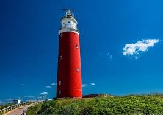
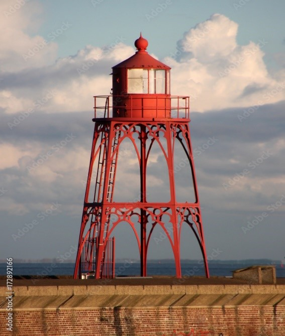
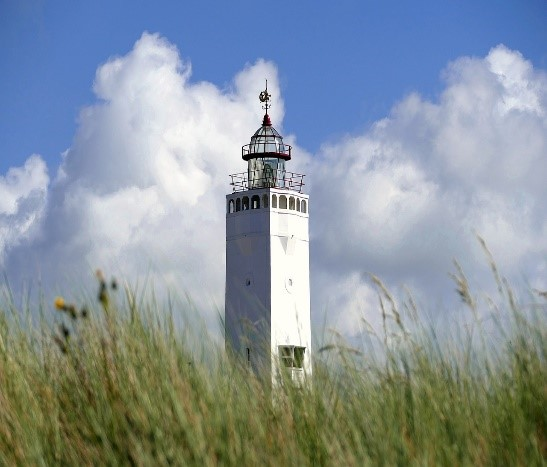
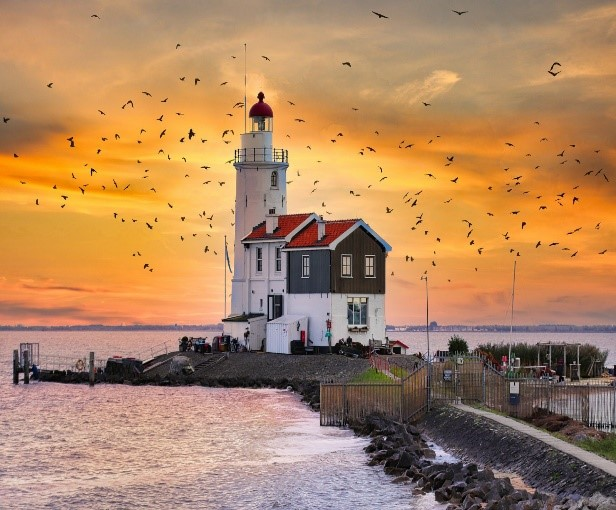
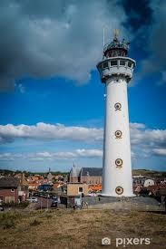
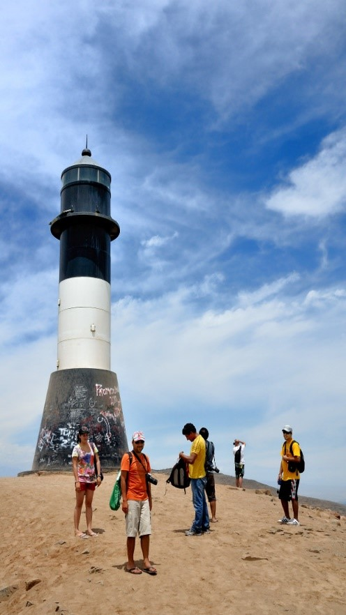

La Magia de los Faros Holandeses
Faro de Texel
Nombre: Vuurtoren Fierland
Ubicación: Punta más septentrional de la isla de Texel, Países Bajos.
Historia: Construido en 1863, diseñado por Quirinus Harder. Recibe su nombre de la antigua isla de Fierland.
Altura total: 53 metros
Altura de la luz: 47 metros
Alcance de la luz: 54 kilómetros
Material de construcción: Piedra y ladrillo
Diseño: Clásico, con una torre cilíndrica y una linterna en la parte superior.

Faro de Vlissingen
Nombre completo: Vuurtoren Vlissingen
Ubicación: Situado en la punta occidental de la isla de Walcheren, en la ciudad de Vlissingen, provincia de Zelanda, Países Bajos.
Altura: Aproximadamente 27 metros.
Alcance de la luz: Su luz es visible a una distancia considerable, guiando a los barcos que se acercan al puerto de Vlissingen.
Diseño: El faro actual es una réplica de la estructura original, construida en 1990. Tiene una forma cilíndrica y una linterna en la parte superior.
Material de construcción: Principalmente ladrillo y piedra.
Función: Su principal función es servir como guía para los barcos que navegan por el estuario del Escalda, uno de los más importantes de Europa.

Faro de Noordwijk
Nombre: Vuurtoren Noordwijk
Ubicación: Noordwijk aan Zee, una popular localidad costera en la provincia de Holanda Meridional.
Altura: Aproximadamente 30 metros.
Función: Guiar a los barcos que navegan por la costa, especialmente durante la noche y en condiciones climáticas adversas.
Diseño: Clásico, con una torre cilíndrica y una linterna en la parte superior. Su estructura es sólida y resistente para soportar las condiciones climáticas costeras.

Faro de Marken
Nombre: Paard van Marken (Caballo de Marken)
Ubicación: Extremo oriental de la isla de Marken, a unos 26 kilómetros al noroeste de Ámsterdam.
Historia: Construido en 1839 y diseñado por J. Valk. Originalmente, la torre era cuadrada, pero fue reconstruida en su forma actual, cilíndrica, años más tarde.
Altura: Aproximadamente 16 metros.
Diseño: Torre cilíndrica con una linterna en la parte superior.
Función: Guiar a los barcos que navegan por el mar de Marken.
Material: Principalmente ladrillo y piedra.
Habitado: A pesar de ser un faro, el edificio ha sido utilizado como vivienda en el pasado y en la actualidad.

Otros Faros Importantes
Faro de Egmond aan Zee
Nombre: Vuurtoren Egmond aan Zee
Ubicación: Localidad costera de Egmond aan Zee, en la provincia de Noord-Holland, Países Bajos.
Altura: Aproximadamente 30 metros.
Diseño: Clásico, con una torre cilíndrica y una linterna en la parte superior. Su estructura es sólida y resistente para soportar las condiciones climáticas costeras.
Función: Guiar a los barcos que navegan por la costa, especialmente durante la noche y en condiciones climáticas adversas.

Faro de Cerro Azul
Ubicación: Cerro Azul, cerca de la localidad de Cerro Azul en la provincia de Cañete, región Lima, Perú.
Historia: Construido en la segunda mitad del siglo XX para servir como guía para los barcos que navegan por la costa central del Perú.
Altura: 10 metros.
Construcción: Cemento y metal, con una estructura simple pero funcional.
Función: Orientar y guiar a los navegantes de barcos y embarcaciones en la costa peruana, especialmente durante la noche y en condiciones de niebla.

Tipos de Faros
- Faro de Torre
- Faro de Costero automático
- Faro de Baliza
- Faro de luz estroboscópica
- Faro Flotante
- Faro de Poste
- Faro de Isla
- Faro histórico o patrimonial
- Faro de Costa
- Faro de vidrio
- Faro de Radar
- Faro de altura o de acantilado
- Faro de luz múltiple o faro de señalización múltiple
Recomendaciones para Faros en Perú
La recomendación para la construcción de faros en Perú dependerá de las características geográficas, climáticas y de tráfico marítimo de cada zona. La diversidad de la costa peruana permite la construcción de diferentes tipos de faros, desde torres convencionales para zonas con alto tráfico, hasta faros automáticos o flotantes en regiones más remotas o difíciles de acceder. Adaptarse a las condiciones específicas de cada área garantizaría una infraestructura marítima segura y eficiente.